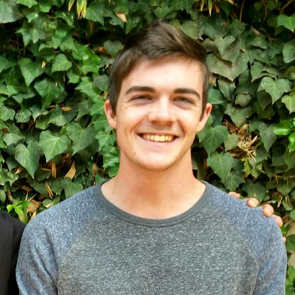
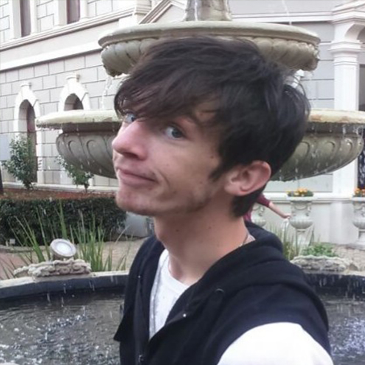
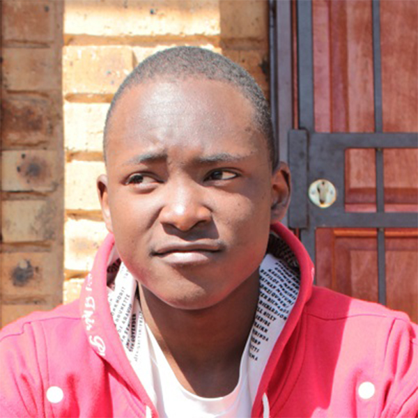
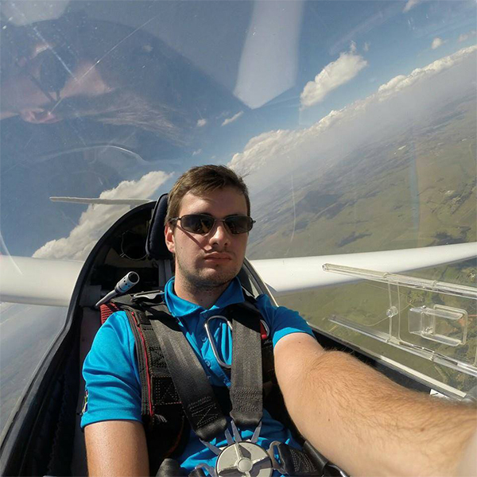

Grant Smith
Lead Programmer and Technical advisor
083 715 1210
grant21smith@gmail.com

Jon-Petr Taljaard
Animator and Personal Assistant
083 215 6779
u14243696@tuks.co.za

Joel Chigumba
Code specialist
084 670 6875
jchigumba@gmail.com

Peter Rayner
Design advisor
071 510 0762
peter.rayner3@gmail.com